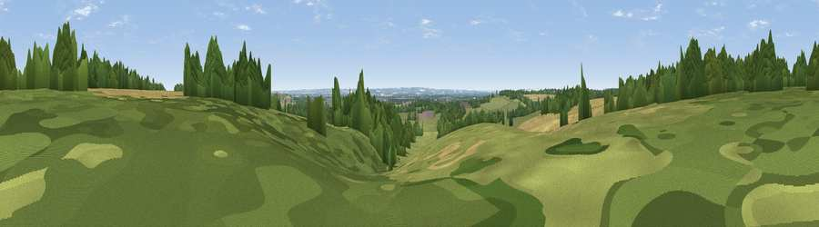

Viewpoint near Wimpole
#35636 in England · top 28% of its area beats it · near WimpoleWhere it is
The exact computed spot (TL 34150 52312). Click the marker for map links.
The view, rendered

A 360° render of this exact spot computed from the terrain model, tree cover and land cover — summer colours, afternoon light, calibrated against photographs of famous viewpoints. Real trees, hedges and buildings will differ in detail.
The panorama
Grey silhouette: terrain skyline in each direction (720 bearings, Earth curvature and refraction included). Dashed green: skyline with trees (+15 m) and buildings (+8 m) as obstacles. Blue strip: how far the ground is visible on each bearing.
Where the view opens
Wedge length = distance to the farthest visible ground on that bearing (vegetation-aware). Rings at 10, 25 and 50 km.
What fills the view
36% woodland · 31% cropland · 31% grassland · 1% built-up
Angular shares of the visible panorama (visual magnitude), not map area. Landscape diversity 0.50 (0–1 Shannon).
Key numbers
More beautiful places nearby
The staircase of upgrades: each row has a higher view potential than everything closer. Driving times are estimates from straight-line distance, calibrated against real road routing — check an actual route before setting out.
| Place | Direction | Drive | Score |
|---|---|---|---|
| New Farm Hill | E · 1 km | ~3 min | 41.3 |
| Viewpoint near Orwell | SE · 3 km | ~7 min | 44.9 |
| Viewpoint near Royston | S · 12 km | ~22 min | 47.8 |
| Viewpoint near Royston | S · 12 km | ~23 min | 56.6 |
| Viewpoint near Hexton | SW · 31 km | ~49 min | 65.4 |
| Beacon Hill | SW · 52 km | ~73 min | 74.1 |
| Viewpoint near Halton | SW · 62 km | ~84 min | 74.3 |
| Coombe Hill Monument | SW · 67 km | ~90 min | 75.5 |
52.15280, -0.04060 · source: osm viewpoint · position refined by local search. Computed location — check access rights before visiting.